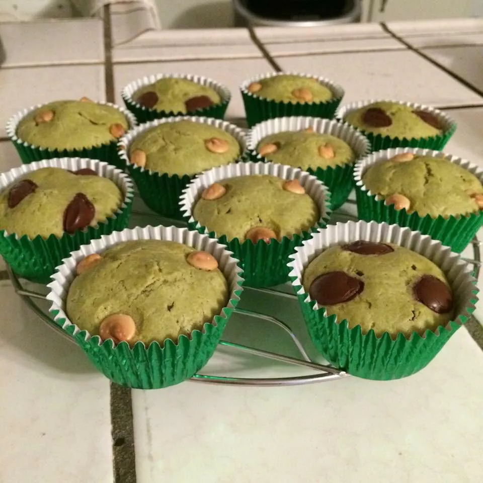

Green Tea Muffins

Description
Delicious, rich green tea muffins with the essence of a favorite tea.
Ingredients
- 1 ⅔ cups all-purpose flour
- ½ cup white sugar
- 1 tablespoon matcha green tea powder, or to taste
- 1 teaspoon baking powder
- ½ teaspoon salt
- 1 cup milk
- ⅓ cup melted butter
- 1 large egg
- ¼ cup chopped walnuts (Optional)
Steps
- Preheat the oven to 350 degrees F (175 degrees C). Grease 12 muffin cups, or line with paper muffin liners.
- Whisk flour, sugar, matcha, baking powder, and salt together in a mixing bowl; set aside.
Whisk together milk, melted butter, and egg in another bowl. Stir the milk mixture into the flour mixture until just moistened.
Stir in walnuts. Divide the batter among the prepared muffin cups.
- Bake in the preheated oven until golden and the tops spring back when lightly pressed, about 25 minutes.
Cool in the muffin tin for 5 minutes, then remove to cool on a wire rack.
Go Back
Main Page